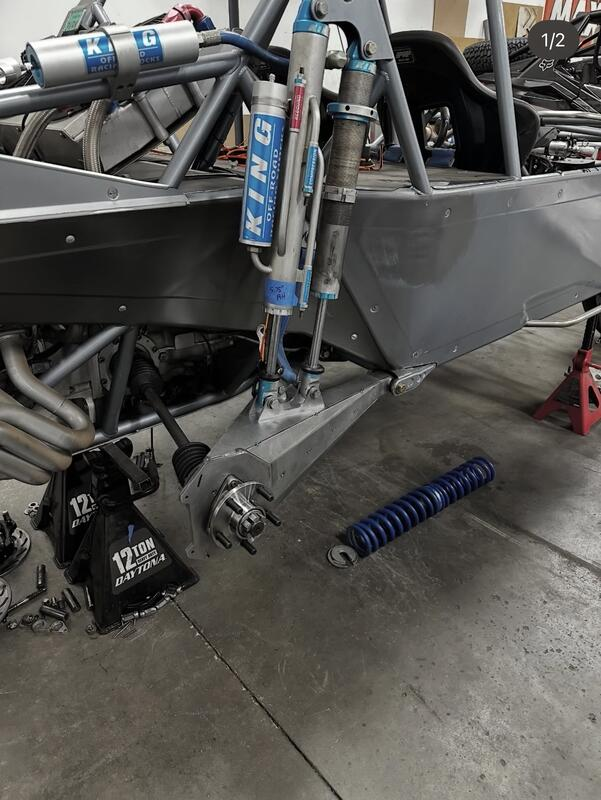
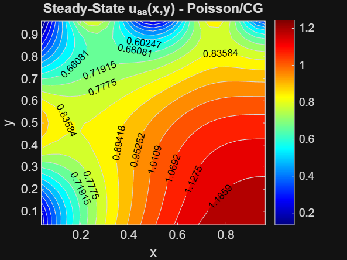
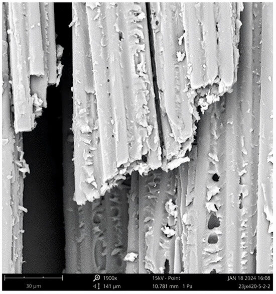

Automotive — 02 Projects
Projects in vehicle dynamics, tribology, and mechanical systems.

Sandrail Control Arm
A 3D scanning and reverse engineering project focused on redesigning an offroad vehicle control arm in 4130 Chromoly Steel. The original four bar linkage was scanned, measured, and fully rebuilt from scratch in SolidWorks for significantly improved durability and strength.
View Project →
Ball Joint Delete Kit
Drop-in spherical bearing upgrade kit for the Arctic Cat Wildcat XX lower control arms. 3D scanned the OEM arm, designed the delete kit in SolidWorks, prototyped in FDM, and produced a full manufacturing package.
View Project →Aerospace — 02 Projects
Work in autonomous aerial systems and computational fluid dynamics.
Limit Switch Bracket
Multi-rotor autonomous drone for locating avalanche burial victims using a 457 kHz beacon transceiver. Implements lawnmower grid search, gradient ascent signal following, and 4-point bracketing via MAVSDK-Python on PX4 + Raspberry Pi 4.
Instrumentation Panel
[Project description. Describe the problem, approach, tools used, and key outcomes. Replace this entire paragraph with your content.]
Other — 03 Projects
Research, publications, and computational work.
ScroodFest Award
Sparse Laplacian matrix solver with mixed Dirichlet/Neumann boundary conditions. Crank-Nicolson time stepping implemented in MATLAB. Full LaTeX report writeup in Overleaf.

2D PDE Solver — Poisson & Heat Equation
MATLAB implementation of a sparse Poisson solver and Crank-Nicolson transient heat equation solver on a 2D domain with mixed boundary conditions. Verified mesh independence across three grid resolutions.
View Project →
Carbon Fiber-Reinforced Polymer Matrix Composites
Co-authored open access review published in Fibers (MDPI). Covers CFRP processing, tribological behavior, damage tolerance, and applications in aerospace and automotive.
Read Paper →Academic Curriculum — 4 Years
Four-year Mechanical Engineering program at the University of Nevada, Reno.
UNR Mechanical Engineering
B.S. Curriculum
University of Nevada, Reno · 2021–2022 Catalog
Interactive prerequisite map of the full four-year ME program. Click any course to view curriculum details.